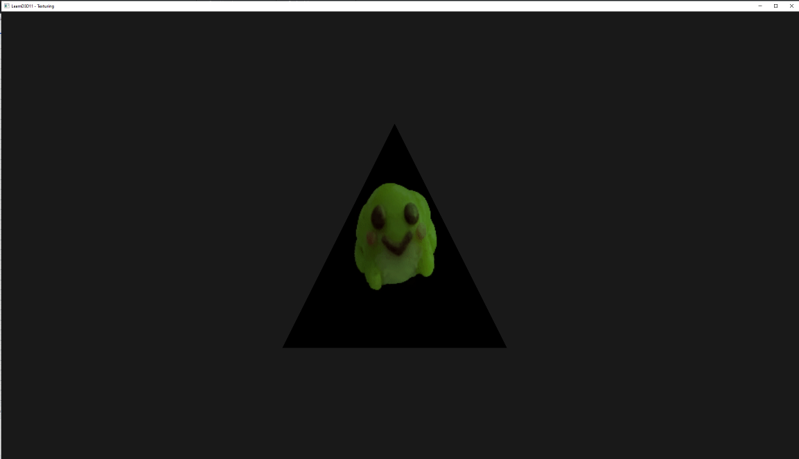

Setting up 3D Rendering¶
Now that we know how to work with simple predefined 2D geometry, it's time to take the next step.
Here we dive into the 3rd dimension, but before we do that, we need to explain some things we're going to need in order to properly display a 3D object.
In this chapter we'll talk about the following items:
- Math ( The matrix compositions we need to get from 3D to our screen (2D) )
- Constant Buffers
Even though the API is called "Direct 3D 11" weirdly enough we can't just simply render a bunch of vertices and have it show up as we expect it to look. Because our screen is 2D, we need to be able to "transform" our 3D model into a 2D space.
The Math¶
For this we'll need to take a light dive into "Matrix Math", whilst understanding the math behind it all can be really helpful (especially once you start doing more advanced stuff), we'll use a library for all of this and only stick to top-level concepts as not to make this tutorial a math-lesson.
The "Transformation" we're concerned with is composed out of a set of multiple matrices:
For our 3D object we have a:
- Rotation matrix (contains the rotation)
- Scaling matrix (contains the scale)
- Translation matrix (contains the position)
These three matrices will compose a matrix we call the "Model matrix", which we get by multiplying them together by doing:
ModelMatrix = ((Rotation * Scaling) * Translation).
This is one of the two key components to getting a 3D object on our screen.
Next up we generally have a something we could call a "Camera" containing a:
- View matrix (contains the camera position + rotation information)
- Projection matrix
The Projection matrix needs a bit more explanation, most traditional camera setups have two modi: "Perspective" and "Orthographic", this is what our "projection matrix" contains alongside, the "Field of View" or "orthographic size" and our "Near" and "Far" plane whose importance will be clear in a moment.
Multiplying these two matrices together results in our "ViewProjection matrix" or "Camera matrix", this is the other key component for getting our 3D object on our screen, which we get by doing:
ViewProjection = View * Projection.
Now that we have our Model matrix and ViewProjection we can make our final matrix, the "world matrix" which we get by multiplying them together: WorldMatrix = ModelMatrix * ViewProjection
This matrix is what we transform every vertex with in order to get our 3D object on our 2D screen.
The code to do all of this looks like this:
Our camera will be defined by the view and projection matrix: XMVECTOR camPos = XMLoadFloat3(&_cameraPosition);
XMMATRIX view = XMMatrixLookAtLH(camPos, g_XMZero, { 0,1,0,1 });
XMMATRIX proj = XMMatrixPerspectiveFovLH(90.0f * 0.0174533f, //degrees to radians
static_cast<float>(_width) / static_cast<float>(_height),
0.1f,
100.0f);
//combine the view & proj matrix
XMMATRIX viewProjection = XMMatrixMultiply(view, proj);
And our 3D object will use the resulting model matrix: XMMATRIX translation = XMMatrixTranslation(0, 0, 0); XMMATRIX scaling = XMMatrixScaling(_scale, _scale, _scale); XMMATRIX rotation = XMMatrixRotationRollPitchYaw(0, _yRotation, 0);
//Now we create our model matrix
XMMATRIX modelMatrix = XMMatrixMultiply(translation, XMMatrixMultiply(scaling, rotation));
Because all these matrix multiplications happen infrequently enough, we "can" do this on the CPU, we only have to recalculate the matrices of 3D objects when they move/scale/rotate which for most level geometry is almost never. However...
The only exception is the camera, which tends to move almost every frame, however we tend to only have 1 of them (or an insignificant amount in other cases). The keen readers might realize that because of the fact that we recalculate the camera matrix, we have to recalculate the world matrix for 'every' 3D object.
What we cannot do however (or well, not with high-poly objects) is transform every vertex on the CPU with the world matrix, luckily GPU's are practically built for this and thus are very good at it. But that means we need a way to get the matrix we need over there somehow.
Constant Buffers¶
In D3D11 we have a thing called a "Constant Buffer", this is a special buffer that contains values that the GPU can expect not to change during a draw call, this means the values are "constant" or "uniform" for the entire shader invocation. This is a great place to put our matrix.
In CreateConstantBuffers() we create our buffer pretty much the same as we did our vertex buffer back in Hello Triangle, except now in the BindFlags, we specify D3D11_BIND_FLAG::BIND_CONSTANT_BUFFER
D3D11_BUFFER_DESC desc{};
desc.Usage = D3D11_USAGE::D3D11_USAGE_DYNAMIC;
desc.BindFlags = D3D11_BIND_FLAG::D3D11_BIND_CONSTANT_BUFFER;
desc.ByteWidth = sizeof(PerFrameConstantBuffer);
desc.CPUAccessFlags = D3D11_CPU_ACCESS_WRITE;
_device->CreateBuffer(&desc, nullptr, &_perFrameConstantBuffer);
desc.ByteWidth = sizeof(PerObjectConstantBuffer);
_device->CreateBuffer(&desc, nullptr, &_perObjectConstantBuffer);
Note that we create two buffers, this is because it is best practice to update constant buffers as little as possible.
So we have one that we adjust every frame, and one that we 'ideally' never have to update (or very little), an example of this could be static geometry as it'll still need a model matrix but we never have to update it after initial creation.
In Update() we will update the contents of our constantbuffers :
D3D11_MAPPED_SUBRESOURCE mappedResource;
_deviceContext->Map(_perFrameConstantBuffer.Get(), 0, D3D11_MAP::D3D11_MAP_WRITE_DISCARD, 0, &mappedResource);
memcpy(mappedResource.pData, &_perFrameConstantBufferData, sizeof(PerFrameConstantBuffer));
_deviceContext->Unmap(_perFrameConstantBuffer.Get(), 0);
_deviceContext->Map(_perObjectConstantBuffer.Get(), 0, D3D11_MAP::D3D11_MAP_WRITE_DISCARD, 0, &mappedResource);
memcpy(mappedResource.pData, &_perObjectConstantBufferData, sizeof(PerObjectConstantBuffer));
_deviceContext->Unmap(_perObjectConstantBuffer.Get(), 0);
These functions will take the data in our "...ConstantBufferData" members and upload it to the GPU.
The last thing we need to do is make our vertex shader aware of these buffers, easily done by calling ID3D11DeviceContext::VSSetConstantBuffers, note that we can set both slots at once by doing the following:
ID3D11Buffer* constantBuffers[2] =
{
_perFrameConstantBuffer.Get(),
_perObjectConstantBuffer.Get()
};
_deviceContext->VSSetConstantBuffers(0, 2, constantBuffers);
That's all we need to do in order to get some data usable on the GPU, finally we now just need to have our vertex shader aware of this data and apply it.
The syntax for this is a little bit different than we're used to in C/C++ but simple enough:
cbuffer PerFrame : register(b0)
{
matrix viewprojection;
};
cbuffer PerObject : register(b1)
{
matrix modelmatrix;
};
We basically declare and define our structure in a single line, cbuffer tells the shader it will be a Constant Buffer (and expect the structure-like layout), followed by the name of the object PerFrame/PerObject and lastly which slot to expect it on : register(b0)
after that we just tell it to expect a single row_major matrix in both buffers.
Now we're free to use the data in the shader.
matrix world = mul(modelmatrix, viewprojection);
First we get our World Matrix by multiplying the model matrix with the viewproject as we noted before, then all that's left is to transform every vertex we get as an input and output that.
output.Position = mul(world, float4(input.Position, 1.0));
That's all we need to do in order to get our 3D object onto the screen!

However since it's still a single triangle, it won't be very obvious if it were static, so in Update() we're actually rotating it around by increasing the rotation we have every frame:
_yRotation += _deltaTime;
Next up, we'll get a nice cube going!